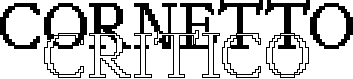

Pensieri Freschi e Dibattiti Caldi
08:30-09:30
zona sc-2
colazione offerta
iscrizione obbligatoria
totale iscrizioni
—
28.04.2026
13.05.2026
23.06.2026
17.09.2026
20.10.2026
11.11.2026
03.12.2026
Quando parliamo di materia, non ci riferiamo solo alla sostanza ma a un principio che dà forma a pratiche, saperi e relazioni. Cornetto critico é una rassegna che apre uno spazio di confronto sperimentale, pensato per generare domande, intrecciare saperi e oltrepassare i confini disciplnari. Un luogo di dialogo tra comoscenze e pratiche eterogenee, in cui esercitare consapevolezza, immaginazione e responsabilità progettuale, non per offrre risposte definitive, ma per costruire insieme nuove possibilità di riflessione.
28.04.2026
iscrizioni
—
In quali spazi del DACD nascono incontri spontanei e perchè?
Partendo dalle riflessioni evocate nel documentario Italo Calvino: un uomo invisibile, il dialogo interroga il rapporto tra individuo e spazio collettivo, dalla scala urbana a quella del campus. Anche negli ambienti dell’istruzione i percorsi possono ridursi a semplici dispositivi di transito, perdendo la loro dimensione relazionale. Alla scala del DACD, inteso come città condensata della cultura, la discussione invita a riflettere su come l’architettura possa favorire incontro e scambio tra istituti e corsi di laurea diversi.
13.05.2026
iscrizioni
—
Cosa rivelano le tracce visibili del paesaggio sui processi invisibili della natura?
Il paesaggio conserva tracce visibili di processi naturali invisibili: stratificazioni, erosioni, fratture, anelli di crescita. In geologia questi segni funzionano come proxy, indicatori indiretti che permettono di ricostruire fenomeni non accessibili direttamente. Letti come indizi materiali, trasformano il paesaggio in un archivio interpretabile anche senza strumenti specialistici. Durante l’incontro osserveremo alcune di queste tracce, le leggeremo insieme e immagineremo quali conoscenze, pattern o spunti progettuali possano suggerire.
23.06.2026
iscrizioni
—
Dall’antico al futuro e dal futuro all’antico: come tradizione e tecnologia possono coesistere e essere al servizio una dell’altra?
Il rapporto tra tradizione e tecnologia non è una semplice successione cronologica tra passato, presente e futuro, ma un processo iterativo in cui ogni epoca rilegge l’altra, generando continui scambi e rigenerazioni. L’incontro tra antiche pratiche artigianali e sistemi digitali emergenti dimostra come la cultura materiale non sia un’eredità statica. In questo scenario, la mano umana e la sua intelligenza sensibile restano una risorsa insostituibile, non perché contrapposte agli algoritmi, ma perché capaci di integrare percezione, intuizione e cura.
17.09.2026
iscrizioni
—
Come creare interazioni più sane ed equilibrate tra specie?
Nel corso dei secoli le società europee hanno trasformato la propria organizzazione e il rapporto con le altre specie e con il territorio. Le comunità tradizionali agivano entro limiti ecologici più sostenibili, considerando la capacità rigenerativa degli ecosistemi e i vincoli spaziali. Con innovazioni tecnologiche e mutamenti socioculturali, queste relazioni sono cambiate. Oggi, tra crisi ecologico-climatiche e sociali, diventa essenziale ripensare il paradigma dominante e relazioni eque.
20.10.2026
iscrizioni
—
È possibile parlare di sostenibilità alimentare mangiando gli animali?
Tra le molte tensioni del dibattito sulla sostenibilità, quella legata all’alimentazione rivela una profonda dissonanza tra linguaggio, conoscenza scientifica e pratiche quotidiane. Da un lato, le evidenze scientifiche in ambito medico e climatico indicano l’alimentazione vegetale come l’opzione più sostenibile; dall’altro, il sistema capitalistico incentiva il consumo di animali, spesso celandone la realtà produttiva dietro slogan che ne offuscano processi e conseguenze. In questo incontro esploreremo il rapporto evolutivo eterogeneo tra esseri umani e alimentazione.
11.11.2026
iscrizioni
—
Quale spazio occupa la materia digitale nel mondo fisico?
Uno smartphone misura circa 15×7×1 cm. Un laptop 34×21×2 cm. Un data center può misurare fino a 100.000 m². Partendo da queste misure rifletteremo sul digitale ragionando su una doppia scala: quella dello spazio fisico e quella dello spazio informativo. L’intervento esplora il volume materiale necessario a produrre, immagazzinare e rendere visibili le informazioni, osservando la relazione tra lo spazio occupato dalle tecnologie e la quantità di dati che esse contengono o rendono accessibili, fino a immaginare la geografia territoriale della materia digitale.
03.12.2026
iscrizioni
—
In che modo i droni stanno trasformando la nostra percezione spaziale?
I droni stanno trasformando il nostro modo di vivere e di percepire la città e i luoghi a distanza. Questo dialogo esplora due aspetti principali: la percezione visiva dello spazio attraverso le immagini e le riprese effettuate dai droni, e l’impatto della nuova mobilità aerea avanzata (AAM) associata ai sistemi aerei senza pilota. Discuteremo i rischi e le opportunità legate a queste tecnologie che stanno ridefinendo il nostro rapporto con lo spazio e il territorio attraverso la materia aerea.
ultimo aggiornamento
—